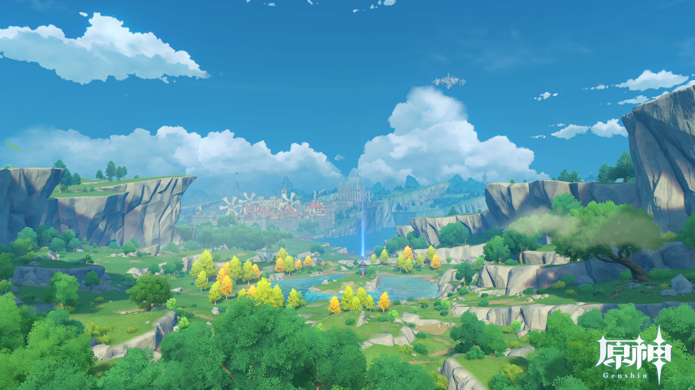

原神とは
『原神』は、
miHoYoが開発したオープンワールド・アクションロールプレイングゲーム。
2020年にAndroid、iOS、Windows、PlayStation 4で、2021年にPlayStation 5でリリースされた。
テイワットと呼ばれる大陸を舞台に、プレイヤーは旅人となって双子の片割れを探す旅を行う。
本作は基本プレイ無料であり、プレイヤーは課金を通じてゲーム内通貨を入手する。
引用:Wikipedia

とてもグラフィックがきれいでストーリーも面白く、
ちょうど一年ほど前にハマりしました。
写真
関連サイト
興味があれば見てください！